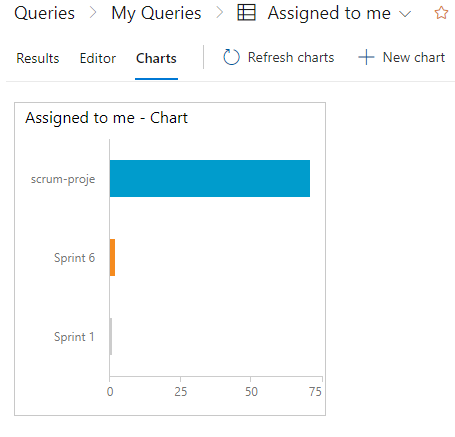

Azure DevOps'ta "Queries Charts" (Sorgu Grafikleri), sorgularınızın sonuçlarını görselleştirmek ve verileri daha anlamlı bir şekilde analiz etmek için kullanılan bir özelliktir.
İşte Sorgu Grafikleri'nin özellikleri:
Sorgu Grafikleri, farklı grafik türlerini destekler. Çubuk grafikleri, dağılım grafikleri, pasta grafikleri, hat grafikleri ve daha fazlasını kullanabilirsiniz. Grafik türünü seçerek verilerinizi istediğiniz şekilde görselleştirebilirsiniz.
Grafiklerinizi özelleştirmek için çeşitli yapılandırma seçenekleri sunulur. Başlık, eksenler, renkler, etiketler ve diğer görsel ayarları düzenleyebilirsiniz. Bu sayede grafiklerinizi istediğiniz şekilde biçimlendirebilirsiniz.
Sorgu Grafikleri, sorgularınızdan gelen verileri grafiklere bağlamak için kullanılır. Sorgunuzun sonuçlarına dayanarak, grafiklerinizin verilerini dinamik olarak güncelleyebilirsiniz. Böylece, sorgunuzun sonuçları değiştikçe grafikleriniz otomatik olarak güncellenir.
Grafiklerdeki verileri filtrelemek veya gruplamak için çeşitli seçenekler sunulur. Belirli bir veri setini vurgulamak veya farklı kategorilere göre verileri gruplamak için filtreler ve gruplama özelliklerini kullanabilirsiniz.
Sorgu Grafikleri, kullanıcıların grafiklerle etkileşimde bulunmasını sağlar. Grafiklerdeki verilere tıklayarak ayrıntıları görüntüleyebilir, grafikler arasında geçiş yapabilir veya belirli bir veri setini vurgulayabilirsiniz. Bu, verilerinizi daha yakından incelemenize ve analiz etmenize olanak tanır.
Sorgu Grafikleri, projenizdeki verileri görsel olarak temsil etmenizi sağlar. Bu, ekip üyelerinizle paylaşabileceğiniz, proje ilerlemesini takip edebileceğiniz ve veri analizi yapabileceğiniz etkili bir araç sağlar.
